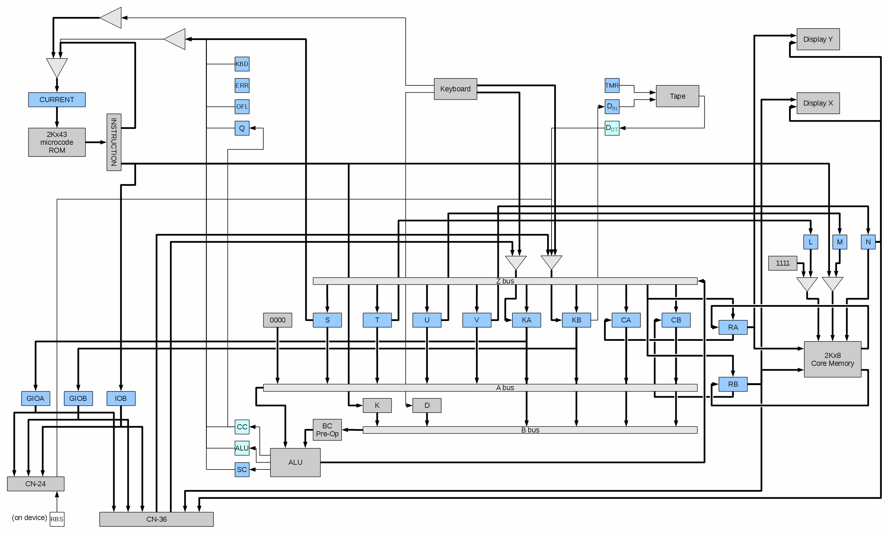
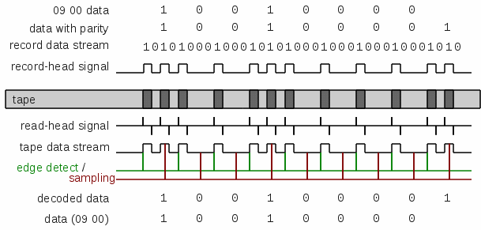

In the above diagram, fine lines represent single-bit (and serial) data paths,
while thicker lines represent multiple bits of data in parallel (typically 4).
Note, the hardware implements both parallel and serial paths,
depending on registers and access operations.
Hardware Registers
The registers in the block diagram are explained here:
| Reg Name | Num Bits | Access | Meaning/Use | |
|---|---|---|---|---|
| S | 4 | R/W | Machine State * | |
| T | 4 | R/W | Memory Address, Hi * | |
| U | 4 | R/W | Memory Address, Mid * | |
| V | 4 | R/W | Memory Address, Lo * | |
| RA | 4 | R/W | Data to/from RAM, Hi | |
| RB | 4 | R/W | Data to/from RAM, Lo | |
| KA | 4 | R/W | Input Data, Hi * | |
| KB | 4 | R/W | Input Data, Lo * | |
| CA | 4 | R/W | General Data, Hi * | |
| CB | 4 | R/W | General Data, Lo * | |
| GIOA | 4 | W/O | Expansion Output, Hi | |
| GIOB | 4 | W/O | Expansion Output, Lo | |
| IOB | 3 | W/O | Expansion Select | |
| CC | 1 | n/a | Internal Carry Flag | |
| SC | 1 | n/a | Saved Carry Flag | |
| ALU | 1 | n/a | Zero Flag | |
| Q | 1 | n/a | Aux Saved Carry | |
| OFL | 1 | n/a | Prog Error | |
| ERR | 1 | n/a | Mach Error | |
| KBD | 1 | n/a | Key Pressed (input ready) | |
| TMR | 1 | W/O | Tape Motor | |
| DIN | 1 | W/O | Tape Write (record) Data | |
| DOT | 1 | R/O | Tape Read Data (one-shot) | |
| RBS | 1 | R/O | CN-24 Ack (on device) | |
| CURRENT | 11 | n/a | Current Instruction Address | |
| * Also used as general purpose registers, when non-conflicting | ||||
Microcode execution happens continuously, as long as the calculator has power. Each instruction contains the address of the next instruction, so there is no traditional "Instruction Counter" that increments. There is a "current instruction address" register, and two stack registers, used to control the flow of the microcode. In addition, certain keyboard conditions cause a hard-coded address to be forced into the current address register.
In normal operation, the current address is applied to the ROM and the resulting 43-bit word is latched into the instruction register. For all instructions, the "next address" field of the instruction is fed-back into the current address register, with the low-order 2 bits coming from a decoding of the condition address fields, JL and JH.
Microcode instruction execution sequence is terminated, and a new instruction address is forced, when certain keys are pressed. Because this is handled in hardware, these keys will immediately terminate any routine in progress and force the calculator to jump to the function programmed for that key.
| Key | PRIME | SET P.C. |
VERIFY PROG |
RECORD PROG |
S.M. | INS | B.S. | DEL |
|---|---|---|---|---|---|---|---|---|
| uCode Address |
000 | 001 | 002 | 003 | ? | ? | ? | ? |
Does the Wang 700 support S.M., INS, DEL, and B.S. keys? Photos of calculators show keycaps that imply this, but so far have not found proof in the schematics. There is no SHIFT key, but perhaps the microcode was able to detect what the user intended?
T.B.D. How the Wang 700 Series detects memory size. Perhaps the microcode was changed to reflect larger memory?
| KK | Model | Memory size | Steps | Registers |
|---|---|---|---|---|
| ? | 720C | 2Kx8 | 1984? | 248? |
| ? | 700A | 1Kx8 | 960 | 120 |
T.B.D.
Microcode Instruction Format
Each microcode instruction is 43 bits long. The instruction fields are
as follows:
| Bits | 42 | 41 | 40 | 39 | 38 | 37 | 36 | 35 | 34 | 33 | 32 | 31 | 30 | 29 | 28 | 27 | 26 | 25 | 24 | 23 | 22 | 21 | 20 | 19 | 18 | 17 | 16 | 15 | 14 | 13 | 12 | 11 | 10 | 9 | 8 | 7 | 6 | 5 | 4 | 3 | 2 | 1 | 0 | - |
|---|---|---|---|---|---|---|---|---|---|---|---|---|---|---|---|---|---|---|---|---|---|---|---|---|---|---|---|---|---|---|---|---|---|---|---|---|---|---|---|---|---|---|---|---|
| Fields | AI | BI | ZO | AOP | AC | BC | Bd | MOP | KK | ST | JAD | JH | JL | - | ||||||||||||||||||||||||||||||
The instruction fields have the following effects on the hardware.
The notation REG<n> refers to Bit "n" of register "REG".
| KK | |
|---|---|
| XXXX | Immediate operand |
|
|
| |||||||||||||||||||||||||||||||||||||||||||||||
|
|
| |||||||||||||||||||||||||||||||||||||||||||||||||||||||||||||||||||||||||||||||||||||||||||||||||||||||||||||
|
|
|
| ||||||||||||||||||||||||||||||||||||||||||||||||||||||||||||||||||||||||||||
| |||||||||||||||||||||||||||||||||||||||||||||||||||||||||||||||||||||||||||||||
| D | |||
|---|---|---|---|
| 3 | 2 | 1 | 0 |
| STEP | Learn/ Learn and Print |
List/ Learn and Print |
n/a |
| KA | KB | ||||||||
|---|---|---|---|---|---|---|---|---|---|
| 3 | 2 | 1 | 0 | 3 | 2 | 1 | 0 | ||
| MOP == 1010 | In | n/a | n/a | DOT | |||||
| MOP == 1011 | Out | n/a | n/a | DIN | |||||
| MOP == 0110 | In | n/a | n/a | RBS | |||||
| JL == 110 (?) | In | Key/Periph Hi | Key/Periph Lo | ||||||
The microcode refreshes the display by sequentially loading each digit from memory, and pausing for about ? cycles (almost ?uS). This means the entire display (16 digits) is refreshed every ?mS, or about ? times a second. The display decoders are fed directly from the output latch of RAM (RA,RB) and the N address register. N contains the column (digit) number to enable, and the RAM latch contains the code for the digit to be displayed, and both must be kept static during the pause.
The displays do not consume a digit column for the decimal point. This means that the calculator must provide addition data to the display hardware. The machine state register (S) is used to select "fixed" or "floating" decimal for the X and Y displays, seaprately. When fixed decimal, the decimal point in column 0 is on. When floating decimal, the last three columns (exponent) are blank so the display expects column 15 refresh data to contain the decimal point position. This means that the decimal point is actually display after all the digits are displayed.
The display decodes digit values differently depending on the column. Column 0 is a "sign/dp" digit and will only display "+", "-", "." and blank. Column 13 is a "sign-only digit and will only display "+", "-", and blank. The decimal point does not consume a column, but is displayed either fixed on column 0 (for scientific notation) or for floating point, when columns 13, 14, and 15 are always blank, the hardware uses the value of the "digit" in column 15 as the decimal point selector. Both X and Y displays are refreshed simultaniously, and both independently select fixed or floating decimal point. The machine state register holds the bits (during refresh) for selecting fixed/floating for both X and Y displays.
The following are provided by the calculator during refresh:
| S | RA | RB | N | ||||||||||||
|---|---|---|---|---|---|---|---|---|---|---|---|---|---|---|---|
| 3 | 2 | 1 | 0 | 3 | 2 | 1 | 0 | 3 | 2 | 1 | 0 | 3 | 2 | 1 | 0 |
| n/a | FXDX | FXDY | Y digit | X digit | Column | ||||||||||
Note: Assumtion at this point is that the Wang 700 cassette drive was operated identically to the Wang 600. The following is from the Wang 600:
Most cassette storage of the era used audio modulation, similar to the "musical tones" of a modem, and used standard audio cassette tapes. But the Wang 700 used magnetic saturation like mainframe computer tape drives. It did work on audio cassettes, but Wang recommended high quality "metal" tape.
Because magnetic media only works when there are changes in magnetic fields, the encoding had to ensure that the magnetic field changed frequently. This means that, for example, a long string of zeroes must not result in a long period of blank tape. Instead, there is guaranteed to be a transition at the beginning of every bit, and a transition in the middle if the bit was a "1". This is known as "Biphase-Mark" encoding or BMC, a variation of Differential Manchester encoding. In addition, a parity bit was added every 4 data bits, to help detect errors.
The timing of each bit was precise, because the tape read code had to be able to stay synchronized without saving state information or doing much processing. Each unit of output was 198 cycles (data bit width 396), and each program (tape image) was preceded by a 211,220 cycle (approximately 0.5 second) blank gap (no magnetic field transitions).
During read, the calculator waits for the "bit start" transition, then delays 272 cycles before sampling again. If the sample reveals that there was a second transition, then the bit is considered a "1", otherwise it is "0". From this stream, the calculator assembles nibbles and checks parity, loading data into memory.
Here is an example of writing 09 00 to tape and reading it back:

The code 09 00 is broken into two nibbles, and each assigned an odd parity bit. Then each 5 bit datum is encoded into the tape stream by converting "1" into either "1 0" or "0 1", and "0" into either "1 1" or "0 0", depending on the previous data to ensure that there is always a transition at the beginning of each bit. The resulting stream is fed to the record head and produces alternating segments of positive and negative magnetic fields on the tape.
During read, the changes between positive and negative magnetic fields show up as "blips" in the signal from the tape read head. These blips are fed into a "one-shot" flip-flop whose timing is set to about 97 cycles. This means that for 97 cycles after a transition there will be a "1" signal, and it will return to "0" after those 97 cycles.
The calculator monitors the signal from the one-shot. The first "1" it sees indicates the beginning of a bit. It then delays 272 cycles and checks the signal again. If it is still "1" (was actually re-triggered by a second transition) then the data bit is interpreted to be a "1". Otherwise, the data bit is interpreted to be "0". These bits are assembled into a 4-bit word and a parity bit, which is then checked for odd parity and, if correct, the data word is stored in memory.
A parity error will cause the calculator to turn on the Mach Error flag (ERR) and stop processing the tape.
Other problems with the tape will generally cause the calculator to "hang" with a blank display. Pressing PRIME is usually required in order to recover.
The calculator reads/writes the tape at about 1000 bits/second. Assuming standard
tape speed, this makes a tape density of about 533 bpi
(compare to mainframe "9-track" tapes which were 800 or 1600 bpi, and later 6250 bpi).
The smallest common audio cassette was 15 minutes (C15) which would hold an
overwhelming 90,000 program steps (on both sides) or
45 complete copies of the calculator memory (a program rarely consumed all of memory).
For this reason, Wang data cassettes were much shorter,
typically only having a few minutes of tape.
Expansion (Peripheral) Ports
Note: Assumtion at this point is that the Wang 700 pripherals operated identically to the Wang 600. The following is from the Wang 600:
| GIOB<0:3> | GIOA<0:1> | ostb | AK(i) | n/c | gnd | pwr | |||||
| 1 | 2 | 3 | 4 | 5 | 6 | 7 | 8 | 9 | 10 | 11 | 12 |
|---|---|---|---|---|---|---|---|---|---|---|---|
| 13 | 14 | 15 | 16 | 17 | 18 | 19 | 20 | 21 | 22 | 23 | 24 |
| gnd | n/c | chass | gnd | ||||||||
Signals with (i) are inputs to the calculator, all others are outputs.
| DH<0:3>(i) | DL<0:3>(i) | istb(i) | PRIME(i) | Learn(i) | AL<0:3> | D<0:2> | |||||||||||
| 1 | 2 | 3 | 4 | 5 | 6 | 7 | 8 | 9 | 10 | 11 | 12 | 13 | 14 | 15 | 16 | 17 | 18 |
|---|---|---|---|---|---|---|---|---|---|---|---|---|---|---|---|---|---|
| 19 | 20 | 21 | 22 | 23 | 24 | 25 | 26 | 27 | 28 | 29 | 30 | 31 | 32 | 33 | 34 | 35 | 36 |
| D<3> | GIOB<0:3> | GIOA<0:3> | IOB<0:2> | ostb | iack | gnd | chass | ||||||||||
Signals with (i) are inputs to the calculator, all others are outputs.
The connector supplies the "always on" signals from AL<0:3> and D<0:3>, which are essentially display refresh data. This supports a device known as "Classroom Display" which was a large-digit remote copy of the main display.
The signals from IOB<0:2> are used to select devices on the daisy-chain. The following codes are used:
| IOB | Device | Command(s) |
|---|---|---|
| 000 | no device | |
| 001 | CN-24 (no device on CN-36) | ALPHA ... 02 02 I/O 00 xx thru 09 xx I/O 12 xx |
| 01X | Model 730 Disk | I/O 13 xx |
| 100 | Various Peripherals | GROUP 1 xx xx |
| 101 | GROUP 2 xx xx | |
| 110 | Future Expansion | |
| 111 | ||
The "Group I/O" peripherals were fairly limited. The devices generally responded to a byte code from the calculator, and then asserted Learn (and strobed PRIME as needed) and pushed program steps to the calculator. The devices and/or operators orchestrated the interaction.
The protocol is as follows (GROUP y xx xx command):
| X=0 | Command mode (Calculator to Device) |
| X=1 | Data mode (direction depends on command) |
The protocol is as follows (I/O 13 xx command):
If the result code is not 00, the calculator sets OFL (Prog Error).
Each byte sent from device is "seen" by the calculator as keyboard input, and is acknowledged by the act of reading that "keyboard code".
Each byte sent from the calculator is acknowledged by the device by sending a dummy "keyboard code".
| xx | Size Code | Meaning | xx | Size Code | Meaning | |
|---|---|---|---|---|---|---|
| 00 | 0x01 | Read 1 byte (step) | 08 | 0x81 | Write 1 byte (step) | |
| 01 | 0x02 | Read 8 bytes (steps) | 09 | 0x82 | Write 8 bytes (steps) | |
| 02 | 0x04 | Read 16 bytes (steps) | 10 | 0x84 | Write 16 bytes (steps) | |
| 03 | 0x08 | Read 32 bytes (steps) | 11 | 0x88 | Write 32 bytes (steps) | |
| 04 | 0x10 | Read 64 bytes (steps) | 12 | 0x90 | Write 64 bytes (steps) | |
| 05 | 0x20 | Read 128 bytes (steps) | 13 | 0xa0 | Write 128 bytes (steps) | |
| 06 | 0x40 | Read 256 bytes (steps) | 14 | 0xc0 | Write 256 bytes (steps) | |
| 07 | 0x00 | Read 64 bytes (steps) | 15 | 0x80 | Write 64 bytes (steps) |
The "I/O 13 xx" devices may not have been limited to the Model 730 Fixed/Removable Disk. The protocol is a block input/output of program steps, but could be used for (extended) register data as well. Sufficiently sophisticated code in ROM could allow all of RAM to be used for registers, and/or implement a simple "operating system" that demand-paged program and register data in RAM.